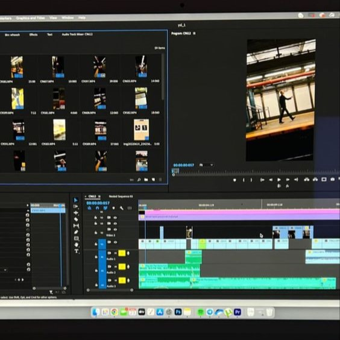
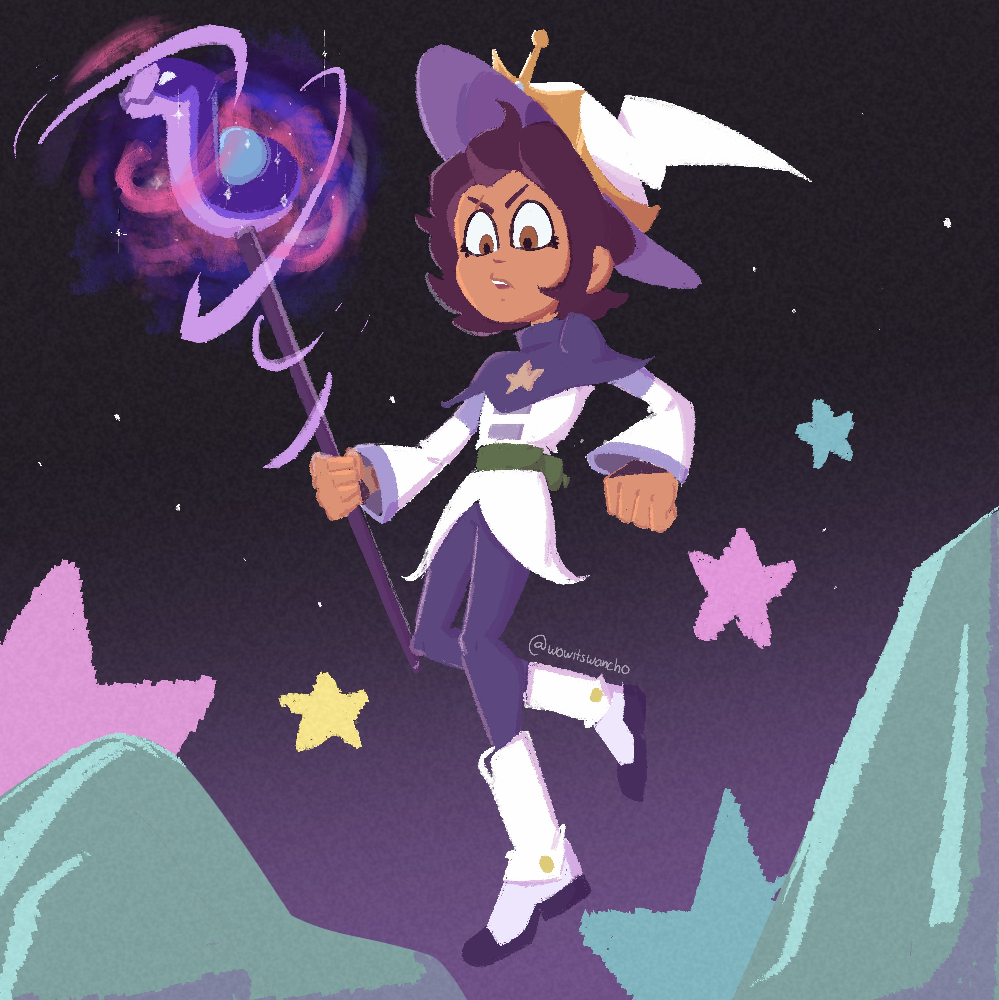
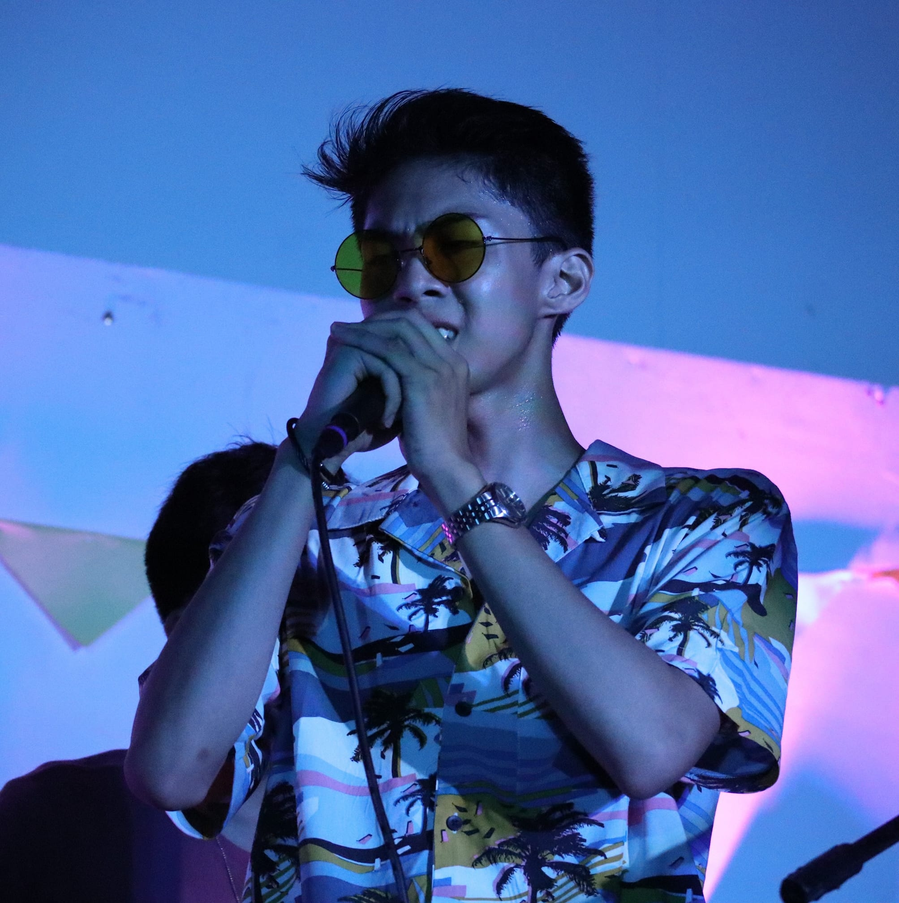

| Video Editing | Illustration | Singing |
|  |  |  |
| Juancho has had more than 4 years of editing experience, mostly editing youtube and tiktok videos for him and others to use and show to the world | Juancho focuses on a western illustration style which is reminiscent to Disney, while also drawing at a level that can be similar to concept art from Riot | Despite not necessarily being in Juancho's level of experties, Juancho has experience perfoming on stage as a singer and bassist in several occasions during his youth |